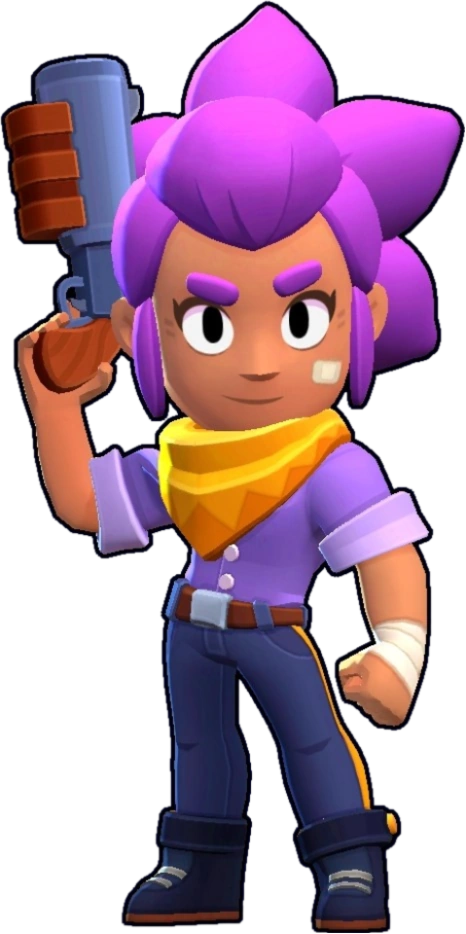

Shelly egy kezdő Brawler, amely a játék elején feloldódik.
Mérsékelt egészségi és sebzési teljesítménye van, valamint gyors mozgási sebessége van.
Támadása sörétes lövedékek sorozata, amelyek közelről nagy sebzést okoznak.
Szuperje visszaüti a túlélő ellenségeket és elpusztítja az akadályokat, hasonlóképpen nagy sebzést okoz közelről.